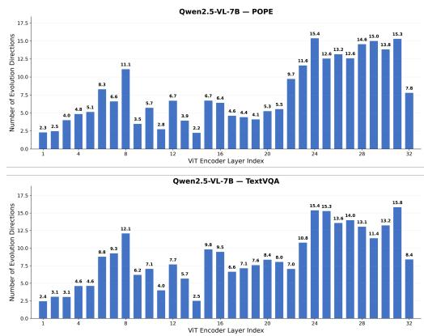

Figureure 4 · : Overview of EvoCutFigure 4: Overview of EvoCut. EvoCut estimates visual token importance from multi-layer token evolution, measures deviation from multiple group evolution directions, aggregates scores across layers, and retains top-ranked visual tokens before the multimodal projector and LLM prefilling.这张图概括 EvoCut 的整体方法流程。阅读时先看模块之间传递的训练信号，再看作者如何把目标拆成可优化的子问题。

A.4 Evolution Deviation Visualization Figure 5: Supplementary visualization for the layerwA.4 Evolution Deviation Visualization Figure 5: Supplementary visualization for the layerwise token evolution analysis in Section 3.2. The figure further illustrates how token evolution directions deviate from group evolution directions across multiple visionencoder layers, complementing the findings in Figure 3.这张可视化用来解释 EvoCut 学到的中间表征或对齐关系。重点看它是否支持正文里的机制判断。